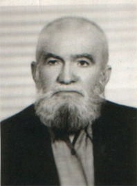

Hâfýz Mustafa Kocakaya [1893-1979]

Hacý Hâfýz Mustafa Hilmi Kocayaka veya Denizli halký arasýndaki lakabý ile ‘Yakalý Hâfýz Mustafa’ 1893’de (1312) Burdur’un Yeþilova Ýlçesinin Kocayaka Köyünde doðmuþtur. 1927’de 34 yaþýnda iken önce Denizlinin Çardak Ýlçesine yerleþir. Bir sene sonra da Denizlinin merkezine taþýnýr. Ticarete yatkýnlýðý çok fazladýr. Ayný anda müteahhitlik, un ve ekmek fabrikasý, tekstil ve çýrçýr fabrikalarý kurar ve iþletir. Yine eþzamanlý olarak zahire ticareti ve krom madeni eksperliði de yapmýþtýr. Ancak, ‘Yakalý Hâfýz Mustafa’ bütün bu dünyevî baþarýlarýný Allah rýzasýna vasýl olmak için basamak yapmasýný bilmiþtir.Hafýz Mustafa, 1943 Denizli mahkemesinde idam ile yargýlanan masum ve mazlum Bediüzzaman Said Nursi ve talebelerine sahip çýkmýþ, onlara kahramanca kol kanat germiþ ve hâkimlerle iyi münasebetler kurarak Denizli Mahkemesinin beraatla neticelenmesine vesile olanlardan olmuþtur. Kendisi hapse girmediði halde, bu hizmetleri bizzat Üstad Bediüzzaman Hazretleri tarafýndan takdir ve sena ile anlatýlmakta ve yazýlmaktadýr.
Dürüstlüðü, hayýrseverliði ve verdiði güven ve itimattan doðan þahsî nüfuzunu kullanarak hapisteki mazlumlara kefil olan Hafýz Mustafa’nýn önemli hizmetlerinden birisi de; hapis anýnda ve tahliyeden sonra Bediüzzaman ve talebelerine yemek, çamaþýr yýkatma ve iaþe konularýnda korkmadan, kahramanca -bu masumlara- sahip çýkmasýdýr. Zaten Denizli þehri Üstad Bediüzzaman Hazretleri tarafýndan “Kahramanlar Ocaðý” olarak tavsif edilmektedir.
Yakalý Hâfýz Mustafa, 28 Þubat 1979 senesinde 86 yaþýnda iken vefat etmiþtir. Kabri Denizli Asri Mezarlýðýnda 34. ada’dadýr.
Risale-i Nur'da Hâfýz Mustafa..
| · | “Denizli tüccarý aslý Burdur'lu Hâfýz Mustafa'ya hitabdýr. Aziz, Sýddýk Kardeþim Ve Hizmet-i Kur'aniye'de Muvaffakýyetli Arkadaþým! Sen binler safalarla geldin, beni ebedî minnetdar ettin ve sadýk arkadaþlarýnla Risale-i Nur'un serbestiyetine hizmetiniz o derece büyük ve kýymetlidir, deðil yalnýz bizi ve Risale-i Nur'un þakirdlerini, belki bu memleketi, belki âlem-i Ýslâm'ý manen minnetdar ettiniz ki; ehl-i imanýn imdadýna yetiþmeye Risale-i Nur'un yolunu serbestçe açtýnýz.” (Emirdað Lâhikasý) |
| · | “Evet hâkim-i âdil, Muharrem ve Feyzi ve Hâfýz Mustafa, bir-iki senede, yirmi sene kadar hizmet-i Nuriyeyi yaptýlar; Nur'un þakirdlerini ebede kadar minnetdar eylediler. Cenab-ý Hak onlardan ve beraberlerinde Nur'a hizmet edenlerden ebeden razý olsun, âmîn!” (Emirdað Lâhikasý) |